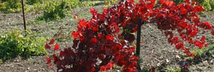
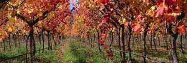

Wine has a rich history dating back thousands of years, with the earliest production so far discovered having occurred c. 6000 BC in Georgia. It had reached the Balkans by c. 4500 BC and was consumed and celebrated in ancient Greece and Rome.
Mica schist soil with southeast aspect.
Traditional culture: soil is mechanically worked (using plough) without using herbicide. / Vines are in double guyot with 2 arms titled to 30 degrees with 2 eyes on every arm. / Trellising in 2 dimensions in 1.70m height. / The manual disbudding helps to quantify the harvest by avoiding any green grape harvest.
Grape juice is turned into wine via the process of alcoholic fermentation
Traditionally the yeasts would have been 'wild' (present on grape skins, in the vineyard and winery) and fermentation would have begun spontaneously.